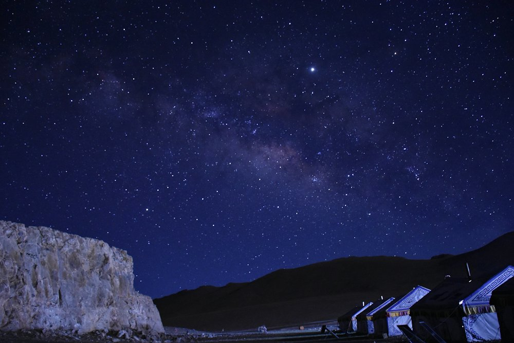

现象历年规律西南
阿里暗夜星空
Ali Dark-Sky Stars · 西藏 · 阿里
最佳时间
4 – 6 月与 9 – 10 月晴夜最多
阿里为全国光污染最低区域之一，银河肉眼清晰；冬季极寒通行难。
离银河最近的地方：海拔 4500 米的暗夜公园，银河拱桥横跨冈仁波齐与玛旁雍错。
不能错过
- 暗夜公园有观星平台与望远镜
- 冈仁波齐+纳木那尼雪山同框的星空机位
当地美食
牦牛肉汤锅狮泉河镇高热晚餐
酥油茶+糌粑暗夜公园前的抗寒组合
风干肉阿里牧区长风干牦牛肉
青稞酒冈仁波齐脚下的敬客酒
旅人提醒
- 高海拔夜间观星极度寒冷，羽绒+睡袋
- 星空摄影需三脚架与备用电池(低温掉电快)
月度热力与气温
-7°
1
-5°
2
0°
3
6°
4
12°
5
17°
6
18°
7
17°
8
15°
9
8°
10
1°
11
-5°
12
适宜度（柱高，5=最佳）依据活动窗口与气候整理；气温为月均高温近似值（°C），仅供规划参考，出行前请查当地预报。
编辑核实笔记 · 整理自阿里地区公开资料，非亲历；天气不可控。
预订 / 官网
官方页面：查看官网 / 官方信息 ↗ · 票价与预约以官网为准
联盟链接含占位 tracking id（Booking/Klook/Trip.com），上线替换为真实 ID 即生效；均带 utm 参数与点击统计。